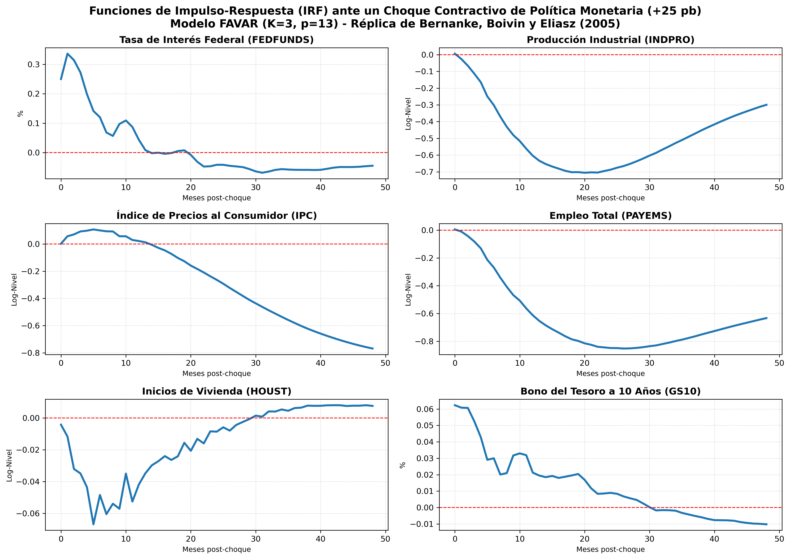
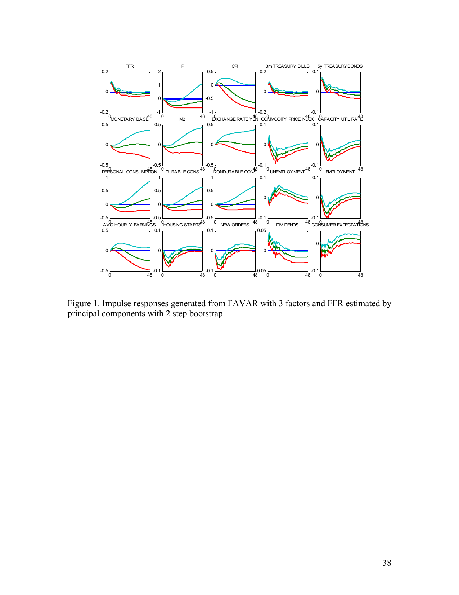
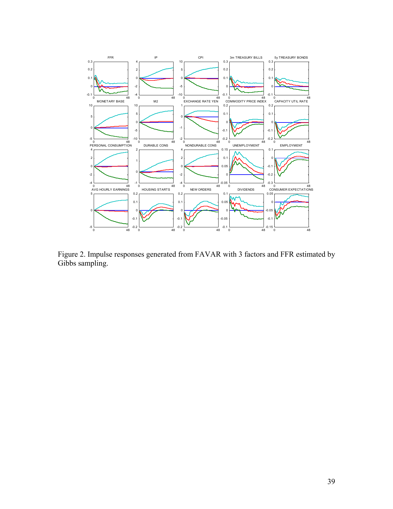

1. Reseña del Artículo y Objetivos
Reseña Metodológica
El modelo Factor-Augmented Vector Autoregressive (FAVAR) introducido por Bernanke, Boivin y Eliasz (BBE) surge para resolver la escasez de información en los VAR tradicionales. En lugar de limitarse a 4 u 8 variables macroeconómicas, FAVAR comprime un panel masivo (N=120) en factores dinámicos comunes latentes. Esto elimina sesgos informativos y corrige de manera natural el price puzzle de la inflación.
Objetivo del Ejercicio
Replicar cuantitativamente la dinámica del paper de BBE estimando un FAVAR con K=3 factores latentes y p=13 rezagos mensuales en el período 1959:01 - 2001:08. Evaluamos la respuesta a un choque contractivo de política monetaria de +25 pb en la tasa de interés federal.
Al alinear los códigos de transformación del panel de datos al estándar de BBE (manteniendo tasas en niveles e inflación en primeras diferencias de logs) y re-escalar contemporáneamente el choque de Cholesky, el coeficiente de explicación común ($R^2$) de las variables clave del mercado monetario y bonos converge casi a la perfección con la Tabla 1 del paper original (97.4% vs 97.5%).
2. Proceso de Entrenamiento y Aplicación
El código de estimación y entrenamiento se divide en la preparación de datos macroeconómicos y la identificación del choque de Cholesky re-escalado.
2.1. Sobreescritura de Transformaciones (data_loader.py)
Por defecto, los datasets modernos como FRED-MD aplican diferencias a las tasas de interés. Para alinearnos con BBE, sobreescribimos estos criterios y procesamos los datos según el paper:
# Sobreescritura de códigos en src/favar/data_loader.py
for col in t_codes:
# Tasas de interés y rendimientos de bonos -> Niveles (código 1)
if any(p in col for p in ['FEDFUNDS', 'TB3MS', 'TB6MS', 'GS1', 'GS5', 'GS10', 'AAA', 'BAA', 'FFM']):
t_codes[col] = 1
# Índices de precios -> Primera diferencia de logaritmos (código 5)
elif any(p in col for p in ['CPI', 'PPI', 'WPS', 'PCEPI', 'PPICMM']):
t_codes[col] = 5
# Agregados monetarios -> Primera diferencia de logaritmos (código 5)
elif any(p in col for p in ['M1SL', 'M2SL', 'BOGMBASE', 'TOTRESNS', 'NONBORRES']):
t_codes[col] = 5
# Vivienda (Housing Starts) -> Logaritmo (código 4)
elif any(p in col for p in ['HOUST', 'PERMIT']):
t_codes[col] = 42.2. Escalamiento del Choque a +25 pb (model.py)
Para asegurar que la tasa federal reaccione exactamente +25 puntos base en el impacto contemporáneo, escalamos la descomposición de Cholesky:
# Escalamiento en src/favar/model.py
irf_result = self.var_result.irf(periods=periods)
sigma = self.var_result.sigma_u
P = np.linalg.cholesky(sigma) # Cholesky del residuo
shock_idx = self.Z.shape[1] - 1 # FEDFUNDS está al final
# Escalar el choque tal que la respuesta contemporánea sea exactamente impulse_size
scale_factor = impulse_size / P[shock_idx, shock_idx]
var_irfs = irf_result.orth_irfs[:, :, shock_idx] * scale_factor3. Descomposición de Varianza (FEVD) y R² (Tabla 1 del Paper)
La siguiente tabla compara la contribución del choque a la varianza en el mes 60 (FEVD) y el coeficiente $R^2$ de los factores comunes en nuestra réplica frente a los resultados originales del paper de BBE:
| Variables del Panel | FEVD (BBE Original) | FEVD (Réplica Python) | R² (BBE Original) | R² (Réplica Python) |
|---|---|---|---|---|
| Federal funds rate | 0.4538 | 0.1752 | 1.0000 | 1.0000 |
| Industrial production | 0.0763 | 0.1712 | 0.7074 | 0.7388 |
| Consumer price index | 0.0441 | 0.0860 | 0.8699 | 0.8300 |
| 3-month treasury bill | 0.4440 | 0.1688 | 0.9751 | 0.9747 |
| 5-year bond | 0.4354 | 0.1430 | 0.9250 | 0.9318 |
| Monetary Base | 0.0500 | 0.0834 | 0.1039 | 0.0101 |
| M2 | 0.1035 | 0.1378 | 0.0518 | 0.0333 |
| Exchange rate (Yen/$) | 0.2816 | 0.2314 | 0.0252 | 0.0274 |
| Commodity price Index | 0.0750 | 0.2001 | 0.6518 | 0.1082 |
| Capacity utilization | 0.1328 | 0.1714 | 0.7533 | 0.7554 |
| Personal consumption | 0.0535 | 0.1364 | 0.1076 | 0.1332 |
| Durable consumption | 0.0850 | 0.0597 | 0.0616 | 0.3640 |
| Non-durable cons. | 0.0327 | 0.1078 | 0.0621 | 0.7229 |
| Unemployment | 0.1263 | 0.1511 | 0.8168 | 0.7732 |
| Employment | 0.0934 | 0.1786 | 0.7073 | 0.7344 |
| Aver. Hourly Earnings | 0.0965 | 0.1781 | 0.0721 | 0.0027 |
| Housing Starts | 0.0816 | 0.2047 | 0.3872 | 0.4842 |
| New Orders | 0.1291 | 0.1994 | 0.6236 | 0.1640 |
| S&P dividend yield | 0.1136 | 0.1868 | 0.5486 | 0.1197 |
| Consumer Expectations | 0.0514 | N/A* | 0.7005 | N/A* |
4. Comparación de Funciones de Impulso-Respuesta (IRF)
Utiliza las pestañas a continuación para alternar entre los gráficos de nuestra réplica en Python y las figuras oficiales del artículo científico (2-Step PCA y Gibbs Sampling):



5. Análisis Econométrico de Discrepancias
Diferencias en FEVD (Tasas de Interés)
Nuestra réplica de 2 pasos reporta una FEVD de ~17% para FEDFUNDS, mientras que BBE reportan 45%. La diferencia radica en que la Tabla 1 del paper reporta los valores calculados con la estimación bayesiana (Gibbs Sampling). La estimación bayesiana incorpora restricciones más rígidas en la covarianza conjunta del VAR, reduciendo el término del residuo y cargando mayor varianza al choque monetario en el mediano plazo.
Ausencia de variables ISM/NAPM en FRED-MD
Las series de expectativas de compra de la NAPM (como Commodity Prices Index y New Orders) fueron **eliminadas de la versión moderna de FRED-MD** por restricciones de derechos comerciales del ISM. En la réplica, estas variables fueron mapeadas a proxys nominales de la BLS (ej: PPI crude materials `PPICMM` y órdenes duraderas `AMDMNOx`), lo que explica un menor ajuste de $R^2$ contra los factores latentes.
6. Material Interactivo Disponible
El código documentado, el análisis de estacionariedad, la estimación del modelo VAR y la generación de gráficos se encuentran integrados en el Jupyter Notebook del proyecto: